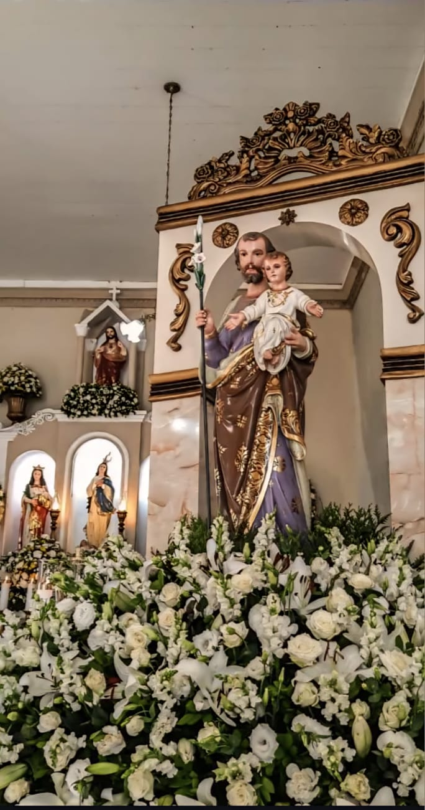

Nosso ministério
O Ministério São José é um grupo de vozes masculinas dedicado a servir na liturgia por meio do canto. Nascemos do desejo de fortalecer a participação masculina na música sacra, trazendo beleza, reverência e devoção para as celebrações. Unidos pela fé e pela vontade de louvar, buscamos louvar a Deus com simplicidade, entrega e união.

Vamos servir juntos ao senhor
Cada ato de serviço é uma expressão da nossa gratidão a Deus. – São João Batista
Sua voz a serviço do Altar
O Ministério São José é um coral e ministério de música formado exclusivamente por vozes masculinas. Acreditamos que a música litúrgica é um canal de oração e evangelização, e queremos somar forças para louvar ao Senhor com excelência e devoção.Não há limite de idade nem exigência de experiência prévia — o único critério é o desejo sincero no coração de servir a Deus através do canto e caminhar em fraternidade.Se você sente o chamado para colocar os seus dons a serviço do Reino, o seu lugar é aqui conosco. Venha fazer parte da nossa família!
Saiba mais

Entre em contato
Escolha o canal mais adequado para falar conosco.